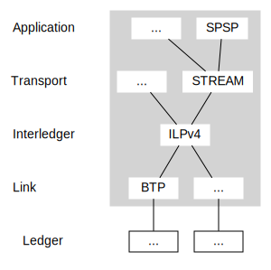

Interledger Architecture
Interledger provides for secure payments across multiple assets on different ledgers. The architecture consists of a conceptual model for interledger payments, a mechanism for securing payments, and a suite of protocols that implement this design.
The Interledger Protocol (ILP) is the core of the Interledger protocol suite.
Colloquially the whole Interledger stack is sometimes referred to as "ILP". Technically, however, the Interledger Protocol is only one layer in the stack.
The Interledger architecture is heavily inspired by the Internet architecture described in RFC 1122, RFC 1123 and RFC 1009.
Interledger Model

Ledgers
Ledgers are stateful systems that track the ownership of assets. Ledgers contain buckets of assets known as accounts and record transfers between them. Each account has a balance, which is the amount of the ledger's assets the account holds. Account balances may be positive or negative, representing assets or liabilities.
In the Interledger model, a ledger only tracks a single asset, which may be a currency, stock, commodity, etc. One entity that maintains accounts denominated in multiple assets is described as having multiple ledgers.
A ledger may be operated by a single entity, as in the case of a bank, or it may be decentralized, as in the case of a blockchain or distributed ledger.
Connectors
A connector is a system that facilitates payments across different ledgers. Connectors generate revenue from Interledger payments while accepting some risk.
In the Interledger model, connectors are described as separate logical systems even though the same entity may operate a ledger and a connector.
A connector receives a local transfer on one ledger in exchange for making another local transfer on a different ledger. A single interledger payment may include multiple connectors and may traverse any number of ledgers.
If the ledgers represent different assets, the connectors set the exchange rate between the transfers. Connectors may generate revenue from the difference in value between incoming and outgoing transfers. Senders may request quotes from multiple connectors to determine the best price before sending a payment.
Connectors peer with one another to exchange information used to determine the best route for a payment.
Interledger ensures that senders' funds are safe throughout an multi-hop payment and cannot be stolen by faulty or malicious connectors (see Interledger Security).
The Interledger
The Interledger protocol suite may be used to transact across any ledgers and connectors, whether they are public or private. There is no single network that all parties must connect to to use these protocols.
"The Interledger" is a conceptual network made up of independent and diverse ledgers linked by connectors. Each account "on the Interledger" is part of a particular ledger, but they may transact with others by sending interledger payments through different ledgers and connectors. Like "the Internet", the Interledger is not a single network but is comprised of multiple interconnected networks.
Interledger Security
Interledger uses conditional transfers to secure payments across multiple hops and even through untrusted connectors. Senders are guaranteed cryptographic proof that the receiver got the payment or their money back, no matter how many ledgers and connectors are in between. Connectors take some risk, but this risk can be managed and is primarily based upon the connector's chosen ledgers and direct peers.
Hint: Conditional transfers or authorization holds are the financial equivalent of a two-phase commit.
Conditional Transfers
Each local transfer is first prepared and then either executed or rejected. When a transfer is prepared, the ledger puts the funds of the source account on hold with a cryptographic condition and timeout. If the condition is fulfilled before the timeout, the transfer is executed and the funds are transferred. If the timeout is reached, the transfer expires and the ledger returns the funds to the source account automatically.
Inspired by the Lightning Network, Interledger uses the digest of the SHA-256 hash function as the condition for transfers. The fulfillment is a valid 32-byte preimage for the hash specified when the transfer was prepared. Ledgers are responsible for validating fulfillments. Transport Layer protocols are used by the sender and receiver to generate the condition for a particular payment.
To be fully Interledger-compatible, ledgers MUST support conditional transfers, though it is possible to send Interledger payments over a ledger that does not natively support the recommended features. See IL-RFC 17 for the full description and tiers of ledger requirements.
Payment Flow
In Interledger payments, all component transfers are prepared before any are executed. No funds are transferred, so none can be lost if a connector fails or attempts to redirect the payment.
When the receiver is notified of funds on hold for them, they submit the fulfillment of the cryptographic condition to claim their funds. Each connector uses the same fulfillment to claim their incoming transfer.
The timeout of each successive transfer is shorter than the previous one, giving each connector a window of time to deliver the fulfillment even if their outgoing transfer was executed at the last possible moment.
For more details on the flow, see the Interledger Protocol specification and the Interledger whitepaper.
Note: Interledger only supports Universal mode as described in the whitepaper. Atomic mode can be used by adjacent subsets of participants in an Interledger payment if desired, but this is not part of the standard.
Connector Risk and Mitigation
Interledger connectors accept some risk in exchange for the revenue they generate from facilitating payments. In the Interledger payment flow, connectors' outgoing transfers are executed before their incoming transfers. After each connector is notified that the outgoing transfer has been executed, they have a window of time to deliver the fulfillment and execute the incoming transfer. Connectors that fail to deliver the fulfillment in time may lose money.
If some transfers in an Interledger payment are executed and others expire, the receiver will think the payment was completed but the sender may think the whole payment failed. Senders MAY retry payments that expire. If they do, they SHOULD use the same condition as the original payment. If the second attempt takes the same route, the connector that failed the first time can complete the payment by submitting the fulfillment without sending another outgoing transfer. Connectors should prefer senders (or aggregators of senders such as wallet services) and connectors that retry payments through the same route, because they increase the likelihood of completing such payments. Connectors may incentivize this behavior by offering better rates to parties known to retry failed payments through the same route.
Failing to deliver the fulfillment in time is the main risk connectors face and there are a number of additional strategies connectors should employ to mitigate and manage this risk. For more details, see IL-RFC 18.
Interledger Protocol Suite
The Interledger stack is separated into four layers:

Ledger Layer
In order to facilitate transfers between accounts, ledgers must implement some API or protocol. This is called the ledger layer. There is a wide variety of ledger layer protocols, corresponding to the many different types of ledger.
See IL-RFC 17 for a full description of the ledger layer requirements.
Most implementations of Interledger use a plugin architecture to abstract the differences between different ledgers. For an example of this, see IL-RFC 4, which defines the interface for the Javascript implementation.
Interledger Layer
The Interledger layer is responsible for facilitating payments across multiple ledgers. It is comprised of two key components that are used together: the Interledger Protocol (ILP) and the Interledger Quoting Protocol (ILQP).
The Interledger Protocol (ILP) is the core of the Interledger stack and defines standard address and packet formats that instruct connectors where to send a payment.
Interledger Addresses provide a ledger-agnostic way to address ledgers and accounts. Interledger addresses are dot-separated strings that contain prefixes to group ledgers. An example address might look like:
g.us.acmebank.acmecorp.sales.199 or g.crypto.bitcoin.1BvBMSEYstWetqTFn5Au4m4GFg7xJaNVN2.
When initiating an Interledger payment, the sender attaches an ILP packet to the local transfer to the connector. The packet is a binary message that includes the destination account, destination amount, and additional data for the receiver. The packet is relayed by connectors and attached to each transfer that comprises the payment. In some cases, ledger protocols may define alternative ways to communicate the packet.
The Interledger Quoting Protocol (ILQP) defines how senders request quotes from connectors to determine the source or destination amount for an Interledger payment. Quoting is optional and senders MAY cache quotes and send repeated payments through the same connector.
Transport Layer
Transport layer protocols are end-to-end protocols used by the senders and receivers of Interledger payments to determine the payment condition and other details. The guarantees afforded to the sender vary depending on the type of transport protocol used.
There are currently two transport layer protocols:
-
In Pre-Shared Key (PSK) protocol, the sender and receiver use a shared secret to generate the payment condition, authenticate the ILP packet, and encrypt application data. Using PSK, the sender is guaranteed that fulfillment of their transfer indicates the receiver got the payment, provided that no one aside from the sender and receiver have the secret and the sender did not submit the fulfillment.
PSK is recommended for most use cases.
Interledger Payment Request (IPR)
In the Interledger Payment Request (IPR) protocol, the receiver generates the payment details and condition. The receiver does not share the secret used to generate the condition and fulfillment with the sender or anyone else, but the sender must ask the recipient to generate and share a condition before sending each payment. IPR is primarily useful for building non-repudiable application layer protocols, in which the sender's posession of the fulfillment proves to third parties that the sender has paid the receiver for a specific obligation.
Application Layer
The application layer is the top layer of the Interledger protocol suite. Protocols on this layer are responsible for:
- Destination account discovery
- Destination amount negotiation
- Transport protocol selection and communication of associated details, such as the shared secret or condition
- Additional details to be communicated in ILP packet data
An example of an application layer protocol is the Simple Payment Setup Protocol (SPSP). SPSP uses Webfinger (RFC 7033) and an HTTPS-based protocol for communicating account, amount, and Pre-Shared Key details from the receiver to the sender.